00 · Setup y teardown: guía del administrador

Resaltado, lo que ya está construido en la ruta hasta este punto; en gris, lo que todavía viene.
Esta página es para dos personas:
| Quién | Qué hace | Cuándo | Tiempo |
|---|---|---|---|
| 👩💼 Administrador del workspace de la empresa | Ejecuta el Setup (00_setup) una sola vez |
Hasta 3 días antes del evento | 10–15 min |
| 🙋 Cada participante | Ejecuta la verificación de ambiente (00_verificar_ambiente) |
Después del Setup, antes del evento | 3 min |
| 👩💼 Administrador | Ejecuta el Teardown (00_teardown), si quiere limpiar todo |
Después del evento | 5 min |
El entrenamiento se ejecuta en el workspace corporativo de Databricks (de desarrollo o dedicado al entrenamiento), no en Databricks Free Edition ni en un workspace de producción.
📽️ Material de apoyo: guía del administrador (cronograma de preparación en una página) · presentación del instructor (← → para navegar, N para las notas).
Líderes de datos: mira el Setup guiado
Presentación animada sobre la dinámica del entrenamiento, la preparación del entorno y el envío de evidencias: Setup guiado.
🧠 Conceptos que aparecen en esta página
| Concepto | Qué es, en una frase |
|---|---|
| Workspace | Tu "oficina" en Databricks: la página web donde están los datos, notebooks, dashboards y apps de tu equipo. |
| Unity Catalog | El sistema que organiza y protege todos los datos. Cada dato tiene una dirección de 3 partes: catálogo → schema → tabla. |
Catálogo fromzerotohero |
El "armario" del curso. Adentro está la base compartida churn y el schema personal de cada participante. |
Grupo fromzerotohero_workshop |
El grupo con todos los participantes. Los permisos se dan al grupo, no persona por persona. |
| SQL Warehouse | El motor que ejecuta las consultas SQL, los dashboards y las alertas. |
| Cluster | Un cómputo para ejecutar notebooks (Ej. 3, 6 y 9). |
| Git folder | Una carpeta del workspace conectada a este repositorio de GitHub. |
👩💼 Para el administrador: Setup
✅ Antes de empezar
| Necesitas | Cómo confirmarlo |
|---|---|
| Ser administrador de cuenta (account admin) | En el menú de tu usuario (arriba a la derecha) aparece Manage account |
| Un workspace con Unity Catalog | En el menú lateral, Catalog muestra catálogos |
| A los participantes agregados al workspace | Settings → Identity and access → Users (cada persona debe aparecer) |
| Una cuenta de GitHub | Para clonar este repositorio |
Qué hace el Setup
Es idempotente: puedes ejecutarlo varias veces (por ejemplo, para sumar participantes) sin duplicar ni borrar nada.
- Crea el grupo
fromzerotohero_workshopy agrega a los participantes - Crea el catálogo
fromzerotohero - Crea el cómputo de la clase:
- SQL Warehouse
fromzerotohero_workshop_wh(serverless, con apagado automático a los 30 min) - Cluster multiuso
fromzerotohero_workshop_cluster(se apaga solo cuando nadie lo usa)
- SQL Warehouse
- Da los permisos al grupo:
USE CATALOG+CREATE SCHEMAen el catálogo (cada participante crea su propio schema)USE SCHEMA+EXECUTEensystem.ai(modelos de IA del Ej. 9)CAN USEen el warehouse yCAN ATTACH TOen el cluster
- Carga la base compartida
fromzerotohero.churn(solo lectura para los participantes):- Dimensiones
dim_cliente,dim_plan,dim_fechay hechoshecho_suscripcion,hecho_uso,hecho_facturacion,hecho_ticket_soporte feature_churn: tabla analítica por cliente- Comentarios y claves en todas las tablas (ayudan a la IA a escribir el SQL correcto)
- Volumen
kb_volumecon la base de conocimiento (FAQ, Política de Retención, Playbook de CS)
- Dimensiones
- Verifica cada participante y las funcionalidades del workspace: Foundation Model APIs, Genie Agents, Databricks Apps y Unity Gateway
- Muestra un informe final y un bloque de evidencia para enviar a tu equipo de cuenta de Databricks
👣 Paso a paso
Paso 1: Clonar el repositorio como Git folder 1. En el menú lateral izquierdo, haz clic en Workspace 2. Arriba a la derecha, haz clic en Create → Git folder 3. En Git repository URL, pega:
4. Haz clic en Create Git folder. Si te pide credenciales, conecta tu cuenta de GitHub 5. ✅ Verás una carpetafrom-zero-to-hero-business con las carpetas de los módulos
💡 ¿Por qué un Git folder? El Setup lee los datos (archivos CSV) de la carpeta
data/del propio repositorio. Así no dependes de descargar nada de Internet desde el workspace.
Paso 2: Abrir y ejecutar el Setup
1. Dentro del Git folder, abre 00 - Setup y teardown → notebooks → 00_setup
2. Arriba a la derecha, haz clic en Connect y elige Serverless
3. Ejecuta las dos primeras celdas de código: haz clic dentro de cada una y presiona Shift + Enter. Aparecen unos campos (widgets) (arriba del notebook o en el panel lateral Parameters)
4. En el campo 4. Participantes, marca a todas las personas del entrenamiento (si el workspace tiene más de 1.024 usuarios, el campo es de texto: escribe los e-mails separados por coma). No cambies los demás campos, salvo 1b. Ubicación gestionada si tu administrador de la nube te indicó una ruta de almacenamiento
5. Haz clic en Run all (arriba a la derecha) y espera de 5 a 10 minutos
6. ✅ Al final, la sección 7. Informe final debe decir ✅ VERIFICACIONES COMPLETAS
7. Copia el bloque de la sección 8. Evidencia del Setup y envíalo a tu equipo de cuenta de Databricks
Paso 3: Pedir la verificación a cada participante Envía a cada participante el enlace de este repositorio y pídele que siga la sección 🙋 Para cada participante (más abajo). Cada uno te devuelve un resumen 🟢/🟡/🔴.
🧯 Si algo sale mal
| Mensaje o síntoma | Qué hacer |
|---|---|
Catálogo 'fromzerotohero' no puede crearse automáticamente |
Tu metastore no tiene almacenamiento por defecto. Crea el catálogo a mano: Catalog → botón + → Create a catalog, nombre fromzerotohero, elige una Storage location. Luego cambia el campo 1. Crear catálogo a false y vuelve a hacer Run all |
El workspace no puede escribir en el almacenamiento del catálogo (o un error 403 de almacenamiento) |
El catálogo quedó en el almacenamiento raíz del metastore, donde este workspace no puede escribir. Elimina el catálogo fromzerotohero (si está vacío), completa el campo 1b. Ubicación gestionada con una ruta de una External Location del workspace (Catalog → External Data → External Locations, ej.: s3://mi-bucket/fromzerotohero) y vuelve a hacer Run all |
Aprovisionar el grupo a nivel de cuenta requiere ADMIN DE CUENTA |
Ejecuta el notebook con un usuario administrador de cuenta, o crea el grupo fromzerotohero_workshop en la consola de la cuenta y asígnalo al workspace |
no encontrado como usuario de cuenta para un participante |
Esa persona no está en la cuenta de Databricks. Agrégala al workspace (Settings → Identity and access → Users → Add user) y vuelve a ejecutar |
| ❌ en Endpoints del ai_query | Esos modelos no están en tu región. Avisa al instructor: en el Ej. 4 se usa otro modelo de la lista |
| ❌ en Genie Agents, Databricks Apps o Unity Gateway | La funcionalidad no está habilitada en el workspace. Habilítala en Settings → Previews o consulta a tu equipo de cuenta |
La celda de carga dice No se encontró la carpeta de CSV |
Abriste el notebook fuera del Git folder. Vuelve al Paso 1 y abre el notebook desde la carpeta clonada |
Genie One (Ej. 7) se abre desde el selector de apps (arriba a la derecha) → Genie One, o en
https://<tu-workspace>/one. Ábrelo una vez antes del evento para confirmar que está disponible.
🙋 Para cada participante
Verificación de ambiente (3 minutos, antes del evento)
- Abre el workspace de Databricks de tu empresa
- Si tu administrador te compartió el Git folder del curso, ábrelo. Si no, clónalo como en el Paso 1 de arriba (Workspace → Create → Git folder)
- Abre
00 - Setup y teardown→notebooks→00_verificar_ambiente - Arriba a la derecha, haz clic en Connect y elige
fromzerotohero_workshop_cluster(o Serverless) - Ejecuta la celda del Paso 0 (Shift + Enter): aparece el campo Tu schema (arriba del notebook o en el panel lateral Parameters). No eliges un schema existente: escribes el nombre del tuyo y el notebook lo crea
- Escribe tu schema: 1.ª letra de tu nombre + primer apellido, en minúsculas y sin acentos (ej.: Gabriel García →
ggarcia). Anótalo: lo vas a usar en todos los módulos - Haz clic en Run all
- ✅ Al final verás tu resultado (🟢 Listo · 🟡 Listo con avisos · 🔴 Falta algo). Copia el bloque de resumen y envíalo a tu administrador o instructor
💡 La verificación también crea tu schema personal
fromzerotohero.<tu_schema>: tu espacio de trabajo para todo el curso.
🧹 Teardown (después del evento)
Necesitas ser administrador de cuenta.
El notebook 00_teardown revierte lo que creó el Setup. Es idempotente: lo que ya no existe se ignora.
Cada interruptor es true/false. Los valores por defecto eliminan solo los recursos del entrenamiento:
- Elimina las apps de la clase (
central-retencion-*, del Ej. 9), que consumen cómputo mientras existen - Elimina el grupo
fromzerotohero_workshop(y con él todos los permisos que se le dieron) - Elimina el SQL Warehouse
fromzerotohero_workshop_wh - Elimina el cluster
fromzerotohero_workshop_cluster - ELIMINAR CATÁLOGO viene desactivado (
false): el catálogofromzerotoherotiene la base compartida y el schema de cada participante con todo lo que construyó. Actívalo solo si el entrenamiento terminó por completo, porqueDROP CATALOG ... CASCADEborra todo eso
Pasos
1. Abre 00 - Setup y teardown → notebooks → 00_teardown desde el Git folder
2. Conéctalo a Serverless y ejecuta la primera celda de código para mostrar los campos
3. Ajusta los interruptores
4. Haz clic en Run all
5. ✅ La sección 3. Informe final debe decir ✅ Desmontaje concluido
Los Genie Agents (Ej. 7) y los dashboards (Ej. 5) son objetos de cada participante en el workspace y no se eliminan.
📁 Contenido de esta carpeta
| Carpeta | Qué contiene |
|---|---|
data/ |
Los CSV de origen (1 por tabla). El Setup los lee desde aquí |
notebooks/ |
00_setup (administrador), 00_verificar_ambiente (participante) y 00_teardown (administrador, después del evento) |